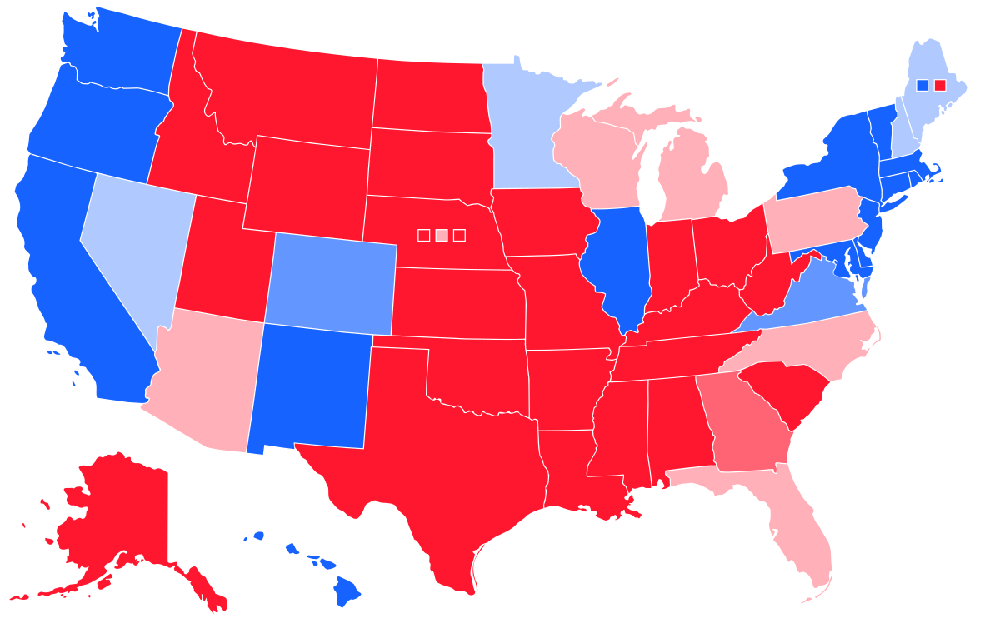

Congress Party US Choropleth
Distibution of Political Parties in Congress across US States.
Distibution of Political Parties in Congress across US States.
01 - Question
Through our project, we wanted to investigate the polarization of each state. We started by analyzing how polarized each state was historically, and then thought about the history of the parties and how much they have changed over time. Thus, we then made a new map representing the current polarization of each state based on their elected officials.
02 - Congress Dataset
Regarding our data, we used the congress database to pull information regarding the party affiliation of all current and past representatives for each state. We used that information to compute the fraction of Democrats to Republicans within each state, and then scaled that fraction down into a range between -1 and 1, where -1 represents a fully Republican state and 1 represents a fully Democratic state.
03 - Backend
We used SQL queries similar to the ones we used in homework 2, one query for all representatives and one for just the current members. For each query, we counted the number of members who are democrats and those who are republicans while grouping by state.
04 - Frontend
For our front end, we used a jquery plugin for map data visualizations called DataMaps. Datamap is built on top of D3.js for more user-friendly and customizable maps. We started with the default US map choropleth, and plugged in our SQL results for each state, based on the past and current representative datasets.
05 - Accuracy
By comparing our model to other visualizations of state polarization, we can conclude that our visualization was a fairly accurate one. Here is our representation of the current state parties, and here is a map from Wikipedia on swing states in the 2016 election. We can see the similarities between the two, which suggests our data and visualization are both quite reliable.
